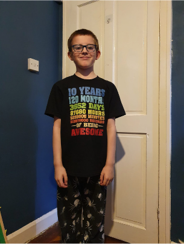
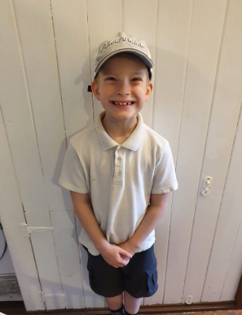
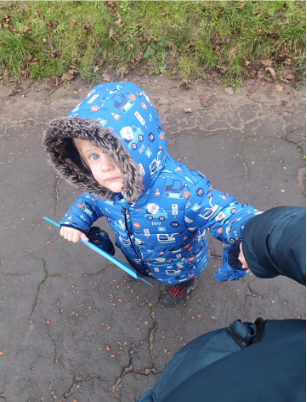
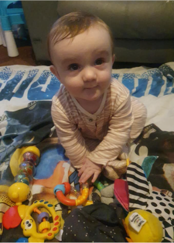

Andy Bolton: User Manual
My Style:
- I love sharing my knowledge, whether it's teaching or just conversation.
- I enjoy learning new things, in virtually any subject.
- I'm still in the honeymoon phase of coding, I still love to write code for fun as a hobby.
- I live and breathe the bootcamp model. As someone who struggled and failed in traditional education, the bootcamp model inspired me to be part of the change I needed in my own education.
What I value:
- Honesty
- Reliability
- Accountability
- High personal standards
- Efficiency
What I don't have patience for:
- Dishonesty
- Lack of preparation
- Disorganisation without reason
How best to communicate with me:
- I'm most efficient in Slack for communication as I can get a little over stimulated in video calls and end up on tangents trying to empty my brain.
- That being said, I find video calls a lot more relaxed and enjoyable for non-urgent comms.
How to help me:
- I'm very independent when working through problems, so if I've asked for help it's due to me having spent a great deal of time trying to solve the problem on my own.
- All suggestions and solutions are welcome.
What people misunderstand about me:
- I struggle with Acute Obsessive Compulsive Disorder so my compulsive behaviours can materialise (and de-materialize, WIN 🙌) on a whim. This can mean I get very adamant at sticking to a rigid structure or method. If I ever appear to be unwavering in a solution it's more than likely because of this. Having said that, on analysis I can alter these behaviours. I'm always more than happy to talk about my condition and I'll never be offended by questions asked about it.
16 Personalities Type:
INFJ-T: Turbulent Advocate
My Interests:
My four tiny humans




My Wife
Skating